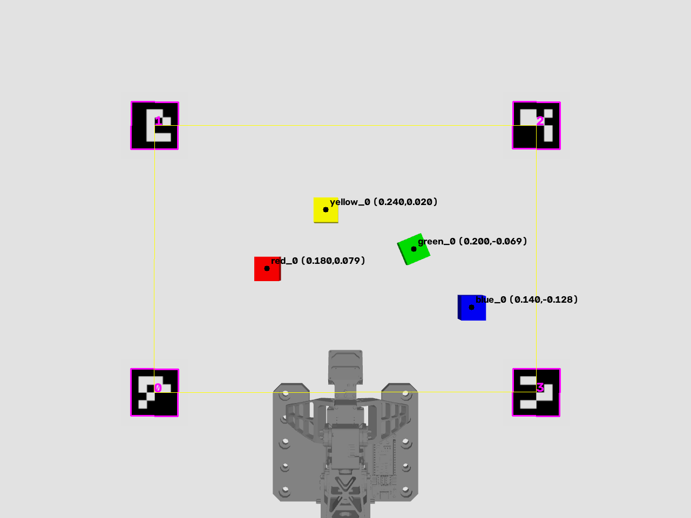
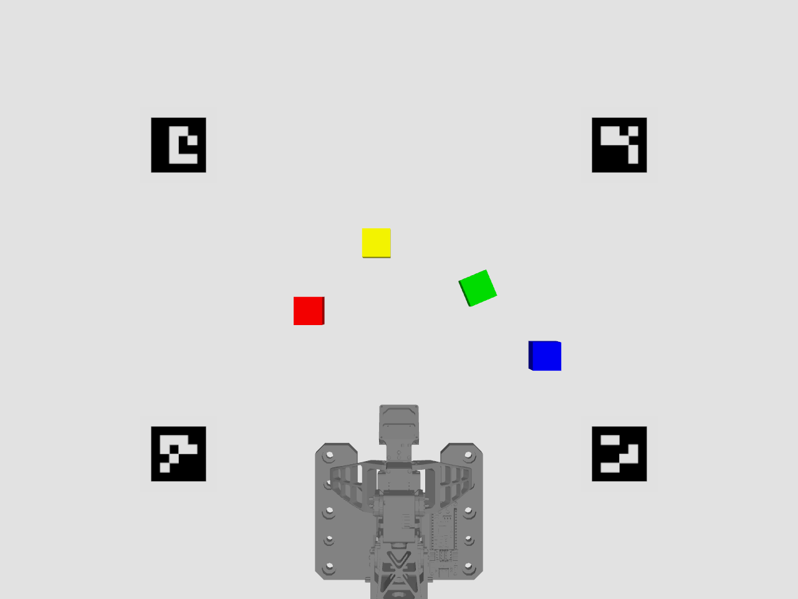
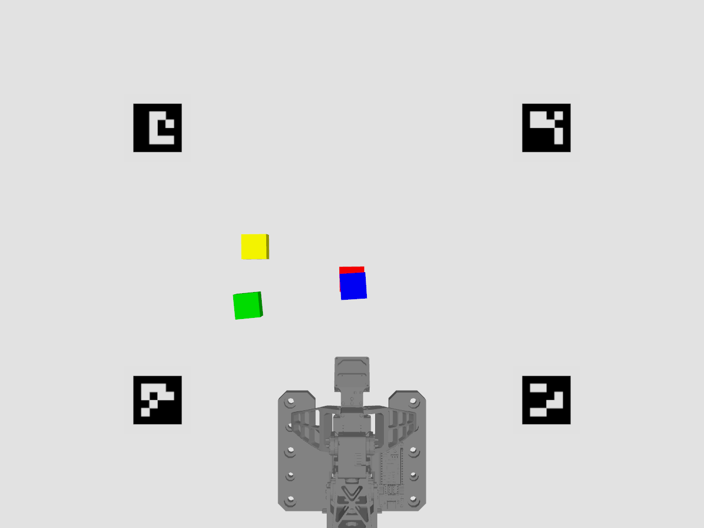
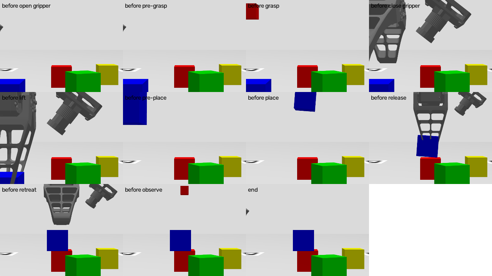
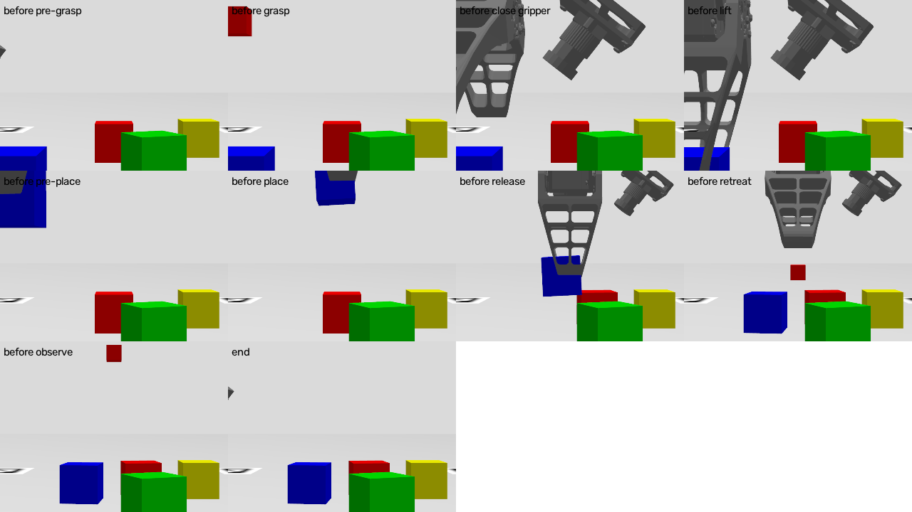
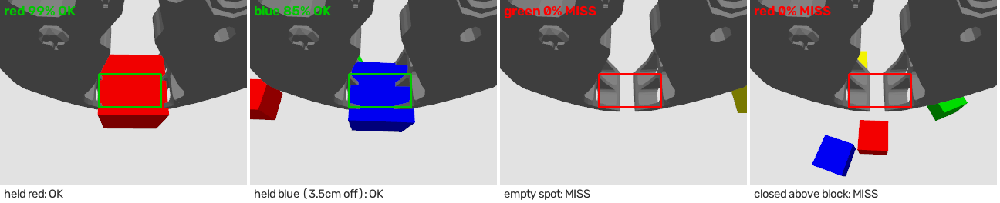
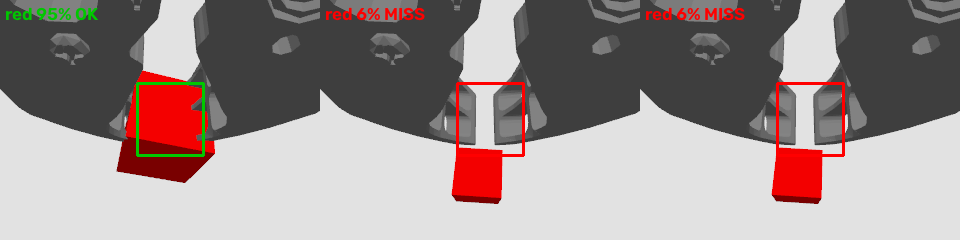

"빨간 블록을 파란 블록 위에 쌓아줘" 같은 한국어/영어 명령을 받아, 카메라로 블록을 찾고, 언어 모델이 할 일을 정하고, 로봇 팔이 실제로 집어서 옮깁니다. Depth 카메라 없이 테이블 네 꼭짓점의 ArUco 마커만으로 블록의 실제 위치(m)를 계산합니다.
| 영역으로 옮기기 | "빨간 블록을 가운데로" |
| 다른 블록 옆에 | "초록 블록을 노란 블록 뒤에" |
| 위에 쌓기 | "파란 블록을 빨간 블록 위에" |
| 여러 단계 | "A를 B 위에 올리고, C를 A 위에" |
| 불가능한 요청 | "보라색 블록…" → 이유와 함께 거부 |
| 설치·빌드 | 완료 |
| 시뮬레이션 환경 | 완료 |
| 카메라 인식 | 완료 |
| 로봇 동작 | 완료 |
| 손목 카메라 집기 확인 | 완료 |
| 캘리브레이션 도구 | 완료 |
| 언어 명령 해석 | 완료 |
| 실물 로봇 이전 | 다음 단계 |

블록 목록:
red_0 (0.180, 0.079)
green_0 (0.200, −0.069)
blue_0 (0.140, −0.128)
yellow_0 (0.240, 0.020)
명령: 파란 블록을 빨간 블록 위에 쌓아줘
{ "feasible": true,
"steps": [
{ "pick": "blue_0",
"place": "on_top:red_0" } ] }
→ 코드가 red_0의 위치와 높이(+2.5 cm)로 좌표를 계산
"id"라는 글자를 그대로 쓰거나, 장소 이름을 빠뜨리는 실수가 있었습니다.
지금은 실제로 보이는 블록 이름과 허용된 장소 목록 안에서만 고를 수 있도록 출력 형식을 매번 새로 만들어 강제합니다.
작은 모델(2B급)로도 실수가 사라졌습니다.
| 상황 | 결과 |
|---|---|
| 없는 블록을 지시 ("보라색 블록") | 언어 모델이 거부 + 이유 설명 |
| 팔이 닿지 않는 곳 (반경 25 cm 밖) | 움직이기 전에 거부 |
| 놓을 자리에 다른 블록이 있음 (3.5 cm 이내) | 움직이기 전에 거부 |
| 위에 다른 블록이 쌓인 블록을 집으려 함 | 움직이기 전에 거부 |
| 옮긴 뒤 블록이 목표에서 3 cm 이상 벗어남 / 쌓기가 무너짐 | 카메라로 확인해 실패로 보고 |


| 명령 | 결과 | 목표와의 거리 | 걸린 시간 |
|---|---|---|---|
| 빨간 블록을 가운데로 옮겨 | 성공 | 5.2 mm | 32 s* |
| 파란 블록을 빨간 블록 위에 쌓아줘 | 성공 (쌓임 확인) | 6.1 mm | 18 s |
| 노란 블록을 왼쪽 앞으로 옮겨 | 성공 | 3.5 mm | 19 s |
| 초록 블록(회전된 상태)을 노란 블록 뒤에 놔 | 성공 | 12.6 mm | 21 s |
| 보라색 블록을 가운데로 옮겨 | 올바르게 거부 | – | 1 s |
* 첫 명령은 언어 모델 로딩 15 s 포함. 블록 하나 옮기는 동작 자체는 약 15–18 s.

처음 통합 실행에서는 "성공"이라고 보고했지만 블록이 옮겨지지 않았습니다. 원인을 하나씩 찾아 고쳤습니다.

| 시험 | 성공 | 비고 |
|---|---|---|
| 일반 이동 | 3 / 3 | 목표와 4.3 ~ 5.4 mm, 매번 같은 방향으로 어긋남 → 보정 가능 |
| 회전된 블록(23°) 집기 | 3 / 3 | 집게 방향을 블록 각도에 맞춰 회전 |
| 쌓기 | 2 / 3 → 8 / 9 | 놓기 방식 개선 후 (다음 쪽 참고) |
블록을 들어 올린 직후 그리퍼에 달린 손목 카메라로 손가락 사이를 봅니다. 잡은 블록은 카메라 바로 앞에 있어 화면 가운데 상자를 거의 가득 채우고, 놓쳤다면 상자가 비어 있습니다. 상자 안에서 집으려던 색이 60% 이상이면 통과, 아니면 집게를 열고 물러난 뒤 실패로 보고합니다.

| 상황 | 색 비율 | 판정 |
|---|---|---|
| 정상 집기 (반복 8회) | 85–99% | 통과 |
| 빈 자리를 집음 | 0% | 실패 |
| 블록 위에서 헛잡음 | 0% | 실패 |
| 다른 색 블록을 집음 | 0% | 실패 |
• 쌓을 때 4 mm 위에서 놓기 → 아래 블록이 튕겨 나가지 않음
• 놓을 때 집게를 조금만 열기 → 블록이 날아가지 않음
• 쌓기 성공률 2/3 → 8/9
• 일반 이동 3/3 유지 (오차 4–6 mm)
카메라, 마커 위치, 조명, 손목 카메라는 설치할 때마다 달라집니다. 이를 맞추는 4단계 도구를 만들었고, 시뮬에서 정답과 비교해 검증했습니다.
결과는 설정 파일로 저장되고, 실행할 때 calib_dir로 지정하면 자동으로 적용됩니다.
| 단계 | 검증 방법 | 결과 |
|---|---|---|
| 1. 카메라 렌즈 | 시뮬 카메라의 실제 값과 비교 | 초점거리 오차 0.03 % |
| 2. 블록 색 | 4색 블록 측정 | 4색 모두 인식, 98–100 %, 색끼리 겹침 없음 |
| 3. 마커 ↔ 로봇 | 마커 위치를 일부러 2° 돌리고 1.4 cm 옮긴 뒤 실행 | 회전 2.04° 되찾음, 맞춤 오차 3 mm |
| 4. 손목 카메라 | 잡음과 놓침 구분 | 잡음 95–100 % vs 놓침 6 % → 확실히 구분 |

• 놓는 위치의 일정한 어긋남(≈4 mm) 보정
• 쌓기 성공률 높이기 (내려놓는 속도 낮추기 등)
• 명령 시나리오를 늘려 성공률 통계 측정
• 더 큰 언어 모델과 비교 (16 GB GPU 안에서)
• 마커: 마커 사이 거리만 자로 재기 (로봇 기준 위치는 캘리브레이션 도구가 구함)
• 카메라: 장치 번호, 해상도 → 렌즈 캘리브레이션 도구
• 블록: 실제 크기, 색 → 색 캘리브레이션 도구
• 로봇: U2D2 포트, 그리퍼 잡는 힘 확인
• 원하는 명령 예시 5~10개
# 터미널 1 — 전체 실행 (Gazebo + RViz + 인식 + 언어 모델 + 동작)
ros2 launch vla_bringup sim_vla.launch.py
# 터미널 2 — 한국어로 명령
ros2 run vla_planner cli
> 빨간 블록을 가운데로 옮겨
자세한 내용은 기술 문서(report_technical.pdf)와 README.md 참고.